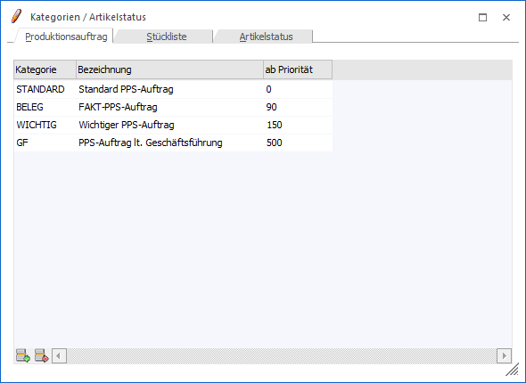
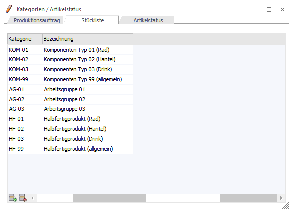
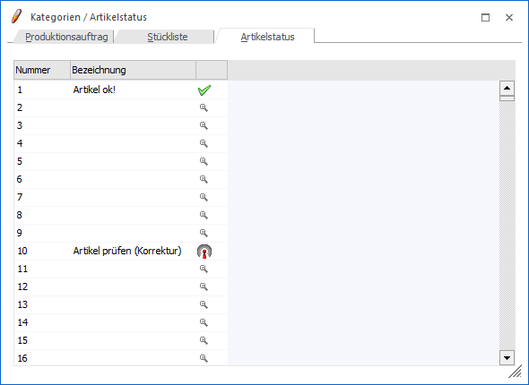
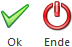

Produktionsauftragskategorien, Stücklisten-Kategorien und Artikelstati können über den Menüpunkt
1 WinLine PPS
1 Stammdaten
1 Kategorien / Artikelstatus
angelegt bzw. verwaltet werden.
Register "Produktionsauftrag"

Über eine Produktionsauftrags-Kategorie können Produktionsaufträge innerhalb einer gewissen Prioritätsbereich "von / bis" zusammengefasst werden. Neben der automatischen Zusammenfassung kann die Kategorie z.B. in der Produktionsauftragsanlage zur schnelleren Hinterlegung einer Priorität genutzt werden.
Ø Kategorie
Eingabe einer Kategoriennummer, max. 20-stellig, alphanumerisch.
Ø Bezeichnung
Eingabe einer Bezeichnung für die Kategorie.
Ø ab Priorität
Eingabe einer Bezeichnung für die Kategorie.
Hinweis
Das Feld "ab Priorität" kann nur ab der zweiten Tabellenzeile bearbeitet werden. Es können somit alle Zeilen außer der ersten gelöscht werden.
Tabellenbuttons "Produktionsauftrag"

Ø Zeile einfügen
Es kann mit diesem Button eine neue Zeile in die Tabelle eingefügt werden.
Ø Zeile entfernen
Es kann mit Hilfe dieses Buttons eine bestehende Zeile aus der Tabelle entfernt werden, wobei die erste Zeile nicht gelöscht werden kann.
Ø Ausgabe Excel
Durch Anwahl des Buttons "Ausgabe Excel" wird der Inhalt der Tabelle an Microsoft Excel übergeben.
Ø Tabelleneinstellungen speichern
Die Spalten einer Tabelle können grundsätzlich an beliebige Positionen verschoben, bzw. in der Breite entsprechend angepasst werden. Durch Anwahl des Buttons "Tabelleneinstellungen speichern" werden die Einstellungen benutzerspezifisch gespeichert und bei dem nächsten Aufruf des Programmpunktes wieder vorgeschlagen.
Ø Gesamteinstellungen speichern…
Im Gegensatz zu "Tabelleneinstellungen speichern" können mit "Gesamteinstellungen speichern" mehrere Tabellenaufbauten gespeichert und nach Wunsch geladen werden. Zusätzlich werden Sonderfunktionen der Tabelle (z.B. "Spalte gruppieren") ebenfalls bei der Speicherung bedacht.
Register "Stückliste"

In diesem Register können Stücklistenkategorien angelegt und verwaltet werden. Solche Kategorien können sowohl Stücklistenkomponenten als auch Tätigkeiten an den folgenden Stellen zugewiesen werden:
ü Fenster "Stücklistenstamm"
ü Fenster "Leitstand/Tätigkeiten einplanen"
ü Fenster "Artikelstatus"
ü Fenster "Produktionskorrektur"
ü Fenster "Arbeitsschritt zusammenfassen"
Hinweis
Die Kategorien stehen als Selektionskriterium u.a. an den folgenden Stellen zur Verfügung:
ü Fenster "Stücklisten - Assistent" (Register "Zuweisung")
ü Fenster "Artikelstatus"
ü Auswertung "Produktionsliste"
ü Auswertung "Ressourcenbelegung"
Ø Kategorie
Eingabe der Kategoriennummer (alphanumerisch).
Ø Bezeichnung
Eingabe der Kategorie-Bezeichnung für die Kategorie.
Tabellenbuttons "Stückliste"
Ø Zeile einfügen
Es kann mit diesem Button eine neue Zeile in die Tabelle eingefügt werden.
Ø Zeile entfernen
Es kann mit Hilfe dieses Buttons eine bestehende Zeile aus der Tabelle entfernt werden, wobei die erste Zeile nicht gelöscht werden kann.
Ø Ausgabe Excel
Durch Anwahl des Buttons "Ausgabe Excel" wird der Inhalt der Tabelle an Microsoft Excel übergeben.
Ø Tabelleneinstellungen speichern
Die Spalten einer Tabelle können grundsätzlich an beliebige Positionen verschoben, bzw. in der Breite entsprechend angepasst werden. Durch Anwahl des Buttons "Tabelleneinstellungen speichern" werden die Einstellungen benutzerspezifisch gespeichert und bei dem nächsten Aufruf des Programmpunktes wieder vorgeschlagen.
Ø Gesamteinstellungen speichern…
Im Gegensatz zu "Tabelleneinstellungen speichern" können mit "Gesamteinstellungen speichern" mehrere Tabellenaufbauten gespeichert und nach Wunsch geladen werden. Zusätzlich werden Sonderfunktionen der Tabelle (z.B. "Spalte gruppieren") ebenfalls bei der Speicherung bedacht.
Register "Artikelstatus"

In diesem Register können bis zu 999 Artikelstati angelegt und verwaltet werden., wobei die Zuweisung zu Stücklistenkomponenten an folgenden Stellen geschehen kann:
ü Fenster "Stücklistenstamm"
ü Fenster "Produktionskorrektur"
ü Fenster "Artikelstatus"
ü Fenster "Arbeitsschritt zusammenfassen"
Hinweis
Mit Hilfe der Stati können Warn- und Sperrmeldung in der Produktionskorrektur und der Produktionsendmeldung ausgelöst werden, wobei die Definition in den PPS-Parametern (Bereich "Parameter") erfolgt. Zusätzlich steht der Artikelstatus kann als Selektionskriterium an den folgenden Stellen zur Verfügung:
ü Fenster "Leitstand-Selektionen"
ü Fenster "Artikelstatus"
ü Auswertung "Produktionsliste"
Ø Nummer
Es kann ein Artikelstatus in der Zeile mit der entsprechenden Nummer angelegt werden.
Ø Bezeichnung
Eingabe der Artikel-Statusbezeichnung (alphanumerisch).
Ø Symbol
Mit einem Klick auf den "Lupe"-Button kann ein Symbol aus der Symbolliste für die graphische Auszeichnung des Artikelstatus im anderen Fenster und Auswertungen ausgewählt werden.
Buttons

Ø Ok
Durch Anwahl des Buttons "Ok" bzw. der Taste F5 werden alle Änderungen gespeichert, die in den unterschiedlichen Registern vorgenommen wurden.
Ø Ende
Mit Hilfe des Buttons "Ende" bzw. der Taste ESC wird der Programmbereich verlassen und alle nicht gespeicherten Änderungen verworfen.